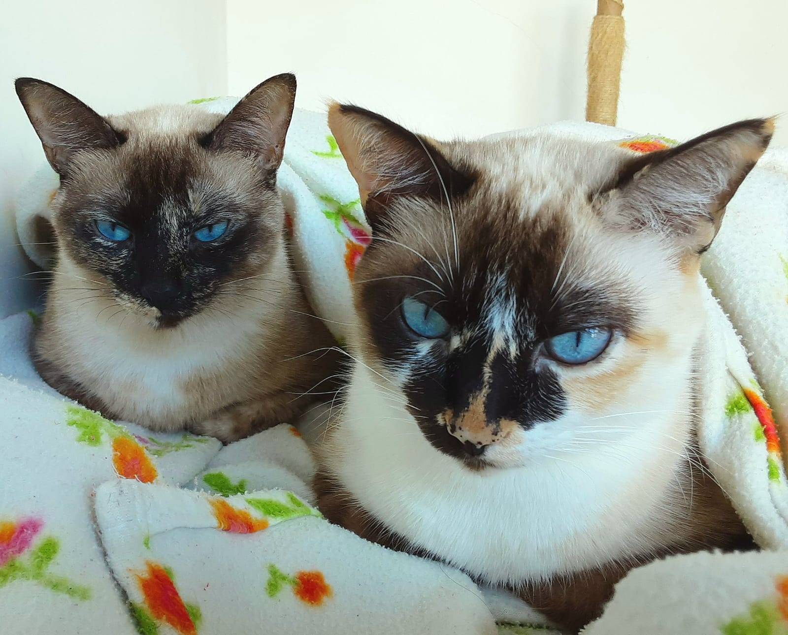

Contact Information
UFRJ (Universidade Federal do Rio de Janeiro)
Professor Assistente (Assistant Professor)
UFRJ, Rio de Janeiro, Brasil
Sala C-125, gabinete B - CT
Email: aragao(at)im(dot)ufrj(dot)br
About Me
I am Professor Adjunto (Assistant Professor) at UFRJ. I had my PhD at IMPA under the supervision of Rob Morris. My research focuses mainly on extremal, probabilistic, and additive combinatorics.
Recent Papers
Submitted Papers
Accepted Papers
Combinatorica, 45 (2025), 64 PDF
European Journal of Combinatorics, 124 (2025), 104082 PDF
European Journal of Combinatorics, 124 (2025), 104078 PDF
Annals of Combinatorics, 28 (2024), 1021-1033 PDF
Random Structures & Algorithms, 64 (2024), 157-169 PDF